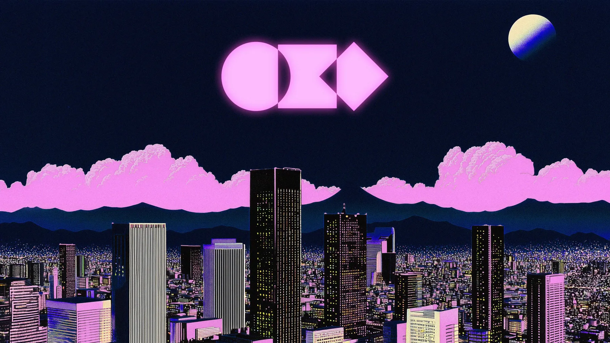

Window 01Welcome to Omarchy
Linux by DHH
Beautiful, fun
& agentic.
The malleable OS for the age of agents. Vibe your way through every alteration, tweak and desire.
Linux by DHH
The malleable OS for the age of agents. Vibe your way through every alteration, tweak and desire.
Arch, Hyprland and Quickshell, composed into one opinionated desktop. From Neovim to Chromium, Obsidian to LibreOffice, the tools are chosen and tuned so you can start immediately.
See what’s included ↗
Everything in its place
A fast tiling desktop, a thoughtfully themed toolset and sensible hotkeys turn the whole system into one coherent workspace.
More than a distribution
Community-built
Discover plugins, inspect their source and shape the shell around the way you work.
Browse plugins ↗Computers should be fun again
Meet the people, see their workstations, wear the mark—or help make the next chapter possible.
Partner or patron? david@omarchy.org ↗